チンチラ
標準グレーのチンチラです。丸い体、大きな耳、ふさっとした尾が小さな表示でも伝わります。
チンチラ、ハムスター、ジャンガリアンハムスター、キャンベルハムスター、マカロニマウス、モモンガ、うさぎ、ホーランドロップ、ネザーランドドワーフ、ヒマラヤンうさぎ、ヤモリ、モルモット、ファンシーラット、アルビノシマリス、リチャードソンジリス、ヨークシャーテリアが、Windowsのタスクバー付近や MacのDock付近を歩き回るデスクトップペットです。作業のそばで控えめに動きながら、 小動物たちの歩き、待機、クリック反応を楽しめます。
Windows版 v0.2.0 は、16種類の小動物と基本モーションに加えて、Windows向けのバージョン情報、アイコン、更新処理、検証情報を整えた先行お試し版です。
ZIPを展開して AnimalsDesktop.exe を起動してください。Mac版は v0.1.5 のZIPを展開して
AnimalsDesktop.app を起動してください。

現在選べる動物は以下の16種類です。まずはこの16種類から遊べます。
標準グレーのチンチラです。丸い体、大きな耳、ふさっとした尾が小さな表示でも伝わります。
ゴールデンシリアンハムスターです。小さな体でちょこちょこ歩く雰囲気を楽しめます。
灰白色の小さなドワーフハムスターです。背中のラインと丸い体が、小さな表示でも読み取れます。
あたたかい灰褐色のドワーフハムスターです。背中のラインと丸い体で、小さな表示でも見分けやすい見た目です。
太い尾が特徴の小動物です。低めの姿勢で、すばやく動く様子が伝わる見た目です。
灰色の体と独特のシルエットが、小さな表示でも読み取りやすい見た目です。
チェスナットアグーチのうさぎです。長い耳と、ぴょんと跳ねる姿が画面の端でよく映えます。
オレンジと白の垂れ耳うさぎです。丸い体と下がった耳が、小さな表示でも伝わります。
チェスナット系の小型うさぎです。短めの耳と丸い体で、コンパクトな姿がよく伝わります。
明るい体に耳や鼻先の濃いポイントが入ったうさぎです。淡い体色と濃い差し色が特徴です。
灰褐色のヤモリです。低い姿勢、細い尾、ゆっくりしたクロールの動きが特徴です。
三毛模様のモルモットです。丸い体と低めの姿勢で、ゆっくり歩く雰囲気が伝わります。
白い体に黒茶のフード模様が入ったラットです。細い尾と低い姿勢で、すばやく動く雰囲気が伝わります。
淡いクリーム色の体に、うっすらした縞模様が入ったシマリスです。軽い跳ねる動きが特徴です。
低い姿勢で動く地上性のジリスです。短めの耳と落ち着いた茶色の体が特徴です。
長い毛並みの小型犬です。黒とタンの毛色、低めの体型、細かな足運びが特徴です。
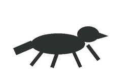
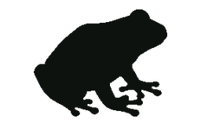
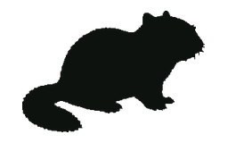
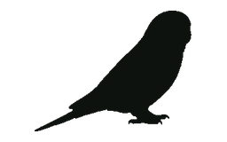
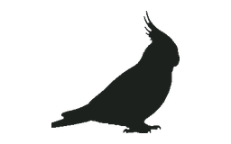
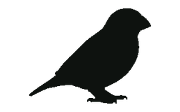
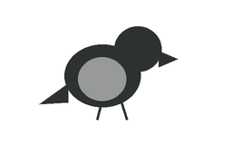
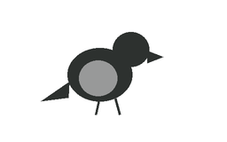
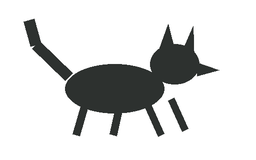
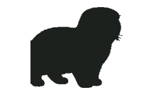
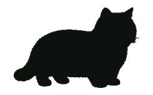
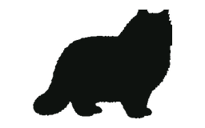
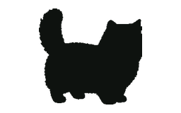
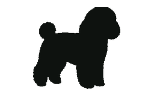
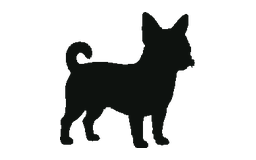
Windowsではタスクバー付近、MacではDock付近に小動物を表示します。
設定から表示数を変えて、複数の小動物を同時に歩かせられます。
Windows版では、表示する画面、歩き回る範囲、縦位置を好みに合わせて調整できます。
動物をクリックすると小さな反応をします。作業中のクリック操作をできるだけ妨げません。
現行プレビューでは木、種、餌などの追加アイテムは表示せず、動物本体のしぐさを中心に楽しめます。
Windows版 v0.2.0 とMac版 v0.1.5 をこのページから入手できます。
Windows版 v0.2.0 は、16種類の小動物を先に試せるWindowsプレビュー版です。 Mac版は v0.1.5 のまま提供しています。 今後も、鳥類や犬猫など見た目と動きが整った動物から順番に追加します。 木、種、餌などの追加アイテムはこの版では表示しません。
Animals Desktop is a small desktop pet app for Windows and macOS. Chinchilla, hamster, Djungarian hamster, Campbell hamster, macaroni mouse, sugar glider, rabbit, Holland Lop, Netherland Dwarf, Himalayan rabbit, gecko, guinea pig, fancy rat, albino chipmunk, Richardson's ground squirrel, and Yorkshire Terrier sprites walk near the Windows taskbar or along the bottom edge above the Mac Dock. Windows version v0.2.0 is the current preview for sixteen initial-motion animals, with Windows version metadata, icon resources, updater hardening, and verification files. The macOS downloads remain on v0.1.5. Runtime foraging props are disabled in this preview.